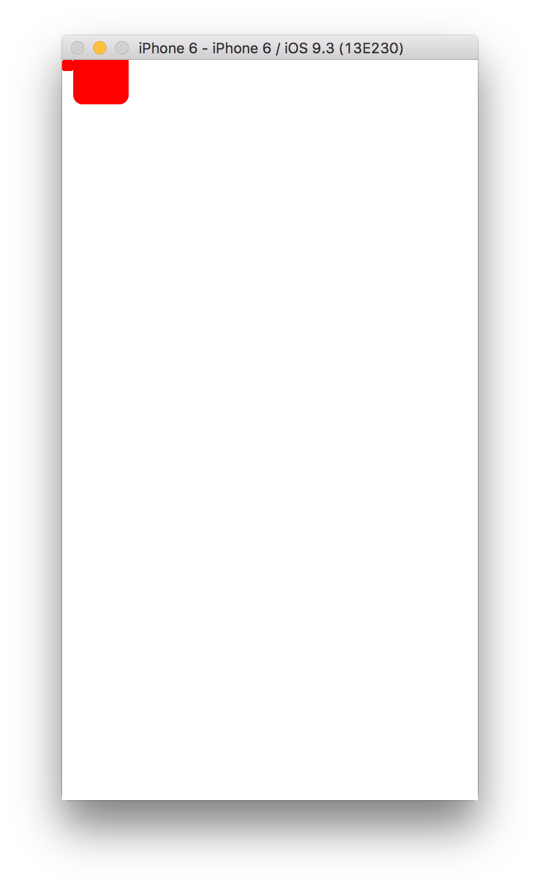

Senior Project Blog
by Shannon Shih and Elena Ariza
April 28, 2016
We experimented with coding Swift in XCode and learned out how use Github to share files between us. We also figured out the basic appearance and behavior of the game.
To start off, we created simple graphics to be used in the game and figured out how to integrate it with our code. We also looked at tutorials such as Swiftris and other guides to help us figure out how to code and Swift. At the end of the day, we managed to get our app working and display one of the images we created using Adobe Illustrator:
